开始
Home
- 内容 Contents
- 剪贴板 Clipboard
- 字体 Font
- 段落 Paragraph
- 样式 Styles
- 编辑 Editing
剪贴板 Clipboard
- 剪贴板的相关设置
- 点击右下角更多 ↘，获取更多剪切板操作
- 剪切 Cut
- 将选择的内容/源剪切至剪贴板，不保留选择的内容
- 快捷键：Ctrl + X
- 复制 Copy
- 将选择的内容/源复制至剪贴板，保留选择的内容
- 快捷键：Ctrl + C
- 粘贴 Paste
- 将剪贴板的内容粘贴|插入到光标当前位置
- 快捷键：Ctrl + V
- 在"粘贴"面板的下拉菜单中选择更多粘贴方式，如保留源格式、只保留文本和选择性粘贴
- 多数情况下，我们仅仅需要内容/只保留文本，不携带样式
- 格式刷 Brush
- 将源对象的样式引用|刷到目标对象
- 默认情况下，单击一次，只能刷一次
- 双击 可以多次刷格式
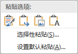
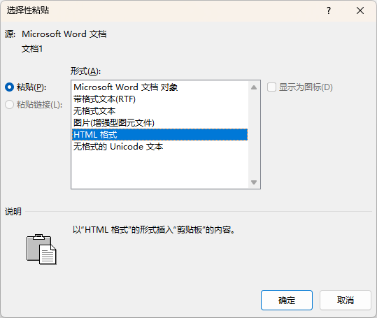
字体 Font
- 字体的相关设置
- 先选择再设置
- 推荐先在"设计"选项卡中统一设置
- 字体 Font
- 一般文档，中文使用宋体，英文使用新罗马 Times New Roman
- 建议：点击右下角更多 ↘，设置更多文字样式，如中文字体和英文字体、缩放、间距、上标、下标等
- 字号 Size
- 可以使用中文表示，如三号；也可以使用数字表示，如12
- 数字表示的是磅，在段落的行间距中也会用到
- 字号多少磅，行间距应该大于或等于字号的磅数
- 文字样式 Style
- 加粗、倾斜、下划线
- 应用不多
- 文字颜色 Color
- 特殊文字样式
- 上标、下标、拼音、拼音、背景颜色等等
- 上标快捷键：Ctrl + Shift + =
- 下标快捷键：Ctrl + Shift + -
- 应用不多
- 清除文字样式 Clear
- 清除设置的格式，还原为默认的格式 → 样式库的正文格式
- 特别来历不明或较早版本的文档，通常调整或修改比较麻烦，建议清除格式后重新设置
- 以下载、解压、使用 谷歌字体 为例
定制字体
段落 Paragraph
- 段落的大多数操作不需要先选择再设置，只需要把光标定位在段落中任意位置即可
- 显示/隐藏标记 Show/Hide Editing Marks
- 开关：可以直观的看出文档使用的各种标记
- 建议首先且始终开启
- 对齐 Align
- 左对齐
- 水平居中对齐
- 右对齐
- 两端对齐 Justify：默认；早期版本默认是左对齐，容易出现锯齿
- 分散对齐 Distributed：
用于字数不一致时的分散对齐
默认是文本所在的段落或者单元格
如果仅仅选择文本，则是指定文本宽度
通常用于表格中以优化布局
- 项目符号 Bullets
- 无序列表
- 默认效果
是圆点，颜色跟随字体
使用制表位分割后续文本
添加"悬挂"属性，如参考文献的使用
- 点击右侧 ▾ 可以自定义项目符号
- 修改颜色：默认跟随文字颜色；
- 调整缩进：右键单击项目符号 → 调整列表缩进，可以调整后续文字的缩进、编号后的分割符类型
- 取消悬挂："段落"对话框 → 取消特殊格式"悬挂"
- 编号 Numbering
- 有序列表
- 可以选择数字或字母分配编号
- 未编号前，仅显示系统内置的编号库
- 应用某个编号后，额外显示应用过的编号和当前文档应用的编号
- 点击右侧 ▾ 可以自定义编号；高亮部分为 占位符 ，不要修改它；按照需要的样式添加其它内容即可
- 定制参考文献编号：在占位符前后分别加上[、]
- 定制章节编号在占位符前后分别加上第、章
- 多级列表 Multilevel List
- 实际使用时，一般不超过3级
- 可以单独使用；仅仅用于编号
- 也可以和样式配合使用：
要么定义多级列表时和对应的样式 关联 起来
要么将已经设置好的样式应用到多级列表
- 编号对齐方式和位置：同普通编号的含义
- 文本缩进位置：多行文本时，才会体现出效果
- 缩进 Increase/Decreased Indent
- 增加、减少
- 通常配合符号、编号和多级列表一起使用
- 中文版式 Asian Layout
- 其中双行合一不可以使用居中对齐，必须是两端对齐，否则上下行字数不等时不能对齐
- 调整宽带用来对齐字数不同的文本；使用表格选择两端分布更方便
- 底纹 Shading、边框 Borders
- 为文本、段落或页面应用背景颜色|底纹或边框
- 点击右侧 ▾ 查看更多设置
- 应：先设置再应用
- 边框和底纹的操作同表格的设计：依次设置：样式 → 颜色 → 宽度，然后单击右侧需要应用的区域并预览
- 先取消表格所有边框，再为右侧每一个单元格单独应用下边框
- 排序 Sort
- 按照段落或标题升序或降序
- 可指定3级排序
- 参考文献和名单的按首字拼音排名
- Word 排序功能没有 Excel 强大
- 段落设置对话框 Paragraph
- 点击右下角更多 ↘，可以设置：
- 大纲级别
除了正文外的大纲级别，会在 "视图" → "导航窗格"中显式，便于快速跳转和编辑
可以通过拖拽的方式重新调整顺序
- 段落的缩进
正文首行缩进2字符
项目符号和编号默认使用悬挂，如参考文献
- 段落前后间距
- 行间距
- 孤行控制：
孤行：页面顶部仅显示段落的最后一行，或页面底部仅显示段落的第一行
选中该选项，可以避免出现这种情况
- 与下段同页：
保持前后两个段落始终处于同一页中
多用于图片和表格的设置：图序应该紧跟图片、表序应该紧跟表格
- 段中不分页：
保持段落始终位于同一页中，而不会被分开显示在两页中
- 段前分页：
当前段落新起一页
相当于在该段之前自动插入了一个分页符
如文章的章节标题都应该另起一页
可以设置在章节标题对应的样式中，避免手动插入分页符
- 换行：中英文混排时，容易出现英文大块空白的情况，勾选"允许西文在单词中间换行"
- 文本对齐方式：图文混排时，文字和图片垂直居中，将"文本对齐方式"调整为"居中"
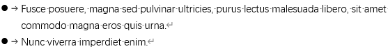
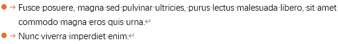
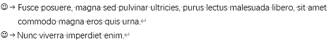
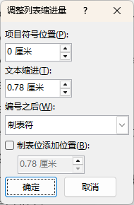
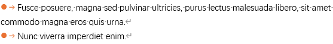
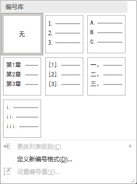
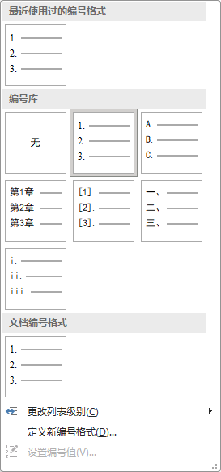
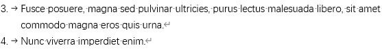
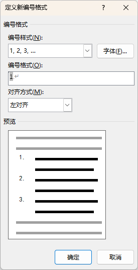
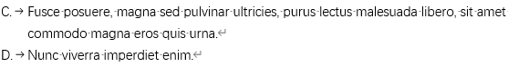
定制编号
参考文献需要保留文本的悬挂
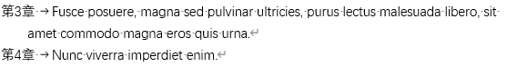
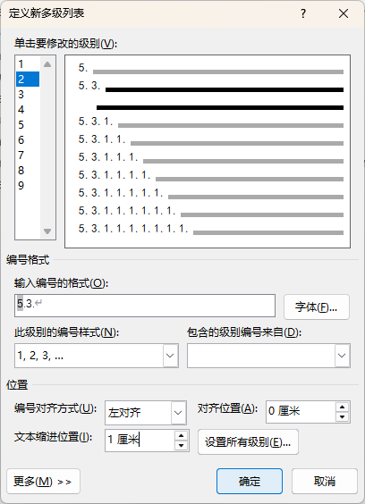
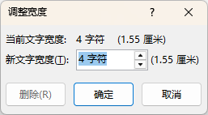
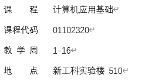

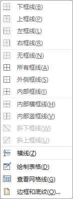
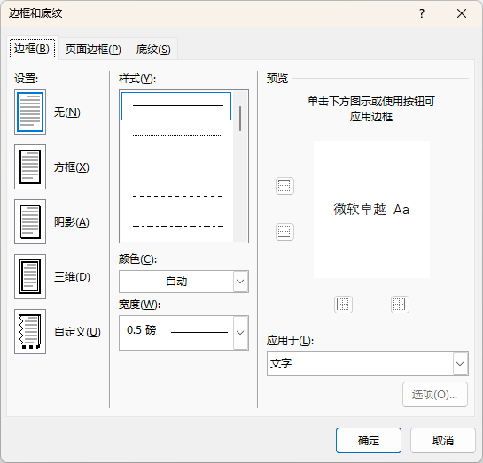
使用表格完成 封面设计

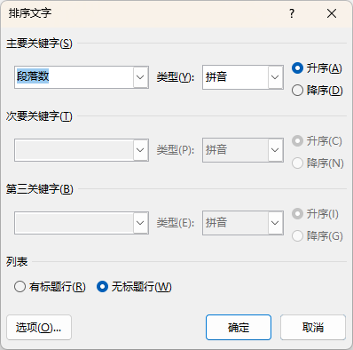
1. 缩进和间距
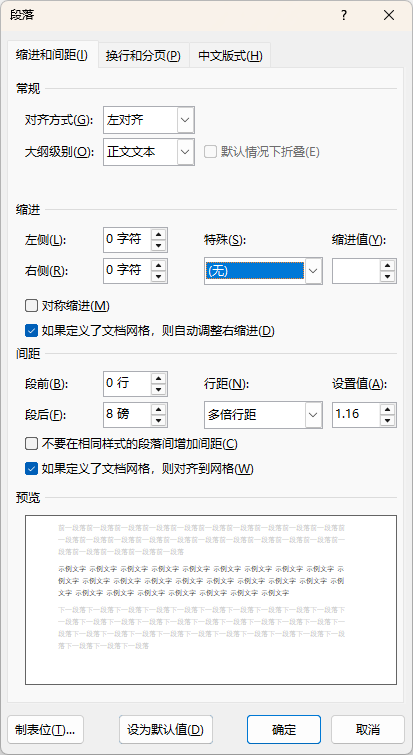
2. 换行和分页
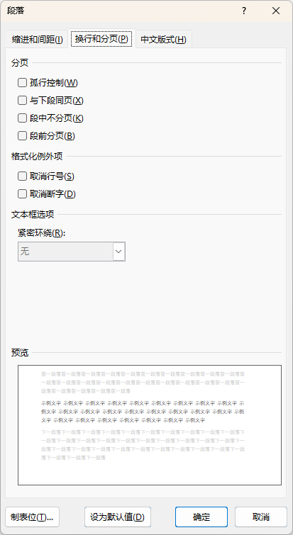
3. 中文版式
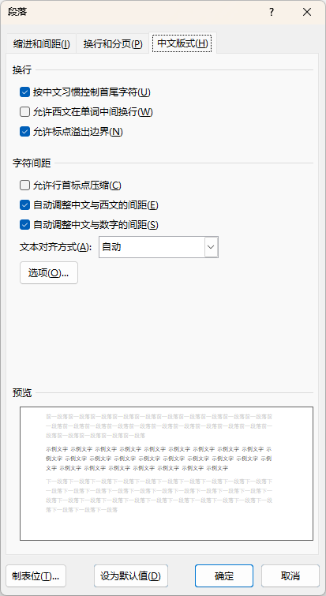
版权设计
样式 Styles
- 系统内置的样式，方便快速应用
- 还可以创建自己的样式以及管理样式
- 不同的标题样式通常对应着不同的大纲级别
- 计算机等级考试高频考点
- 点击右下角更多 ↘，获取更多操作
- 更新样式
- 先在文档中设计格式，最后在样式库中右键单击某个样式 → "更新..."，系统将设计的格式更新|替换当前样式
- 通常是先应用样式，修改好后再更新到样式
- 也可以直接修改样式再应用
- 修改样式
- 在样式上右键单击，选择"修改"
- 在弹出对话框的"格式"中，可以调整更多样式
- 不要修改"正文"样式。它是所有样式的基础
- 创建新样式
- 如没有需要的样式，可以使用"新建样式"完成设计并应用，如为代码制定带背景的特别样式
- 创建目录或题注时，系统会自动生成对应的样式；如需要调整，请修改对应的样式
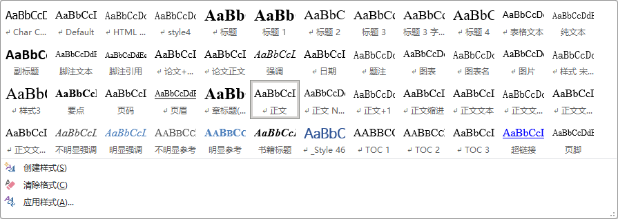
通常只设置"字体"和"段落"
可以为样式指定快捷键
设置标题样式
设置目录样式
创建代码样式
编辑 Editing
- 查找 Find
- 快捷键：Ctrl + F
- 替换 Replace
- 快捷键：Ctrl + H
- 利用对话框底部的"格式"和"特殊格式"，配合通配符，实现更强大的操作
- 选择 Selection
- 类似的文本，便于快速调整样式
- 计算机等级考试高频考点
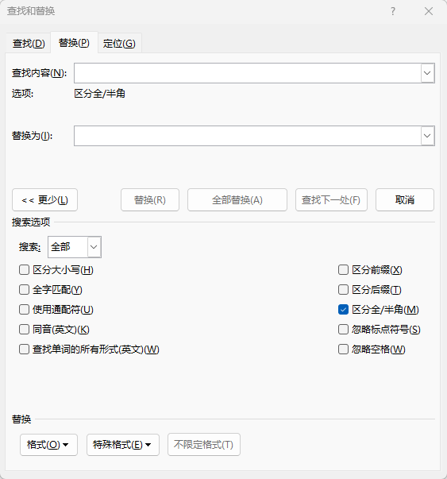
设计试卷 - 查找替换
练习 Drill
- 打开之前创建的个人文档
- 生成诺干标题段落，分别对应 Basic、Cover、Lists、Table、Picture、Header & Footer、TOC和cross-reference
- 定制标题编号，如第1章、第2章
- 每个标题段落应该新起一页
- 为标题分配大纲级别，便于在导航窗格显示
文档再处理